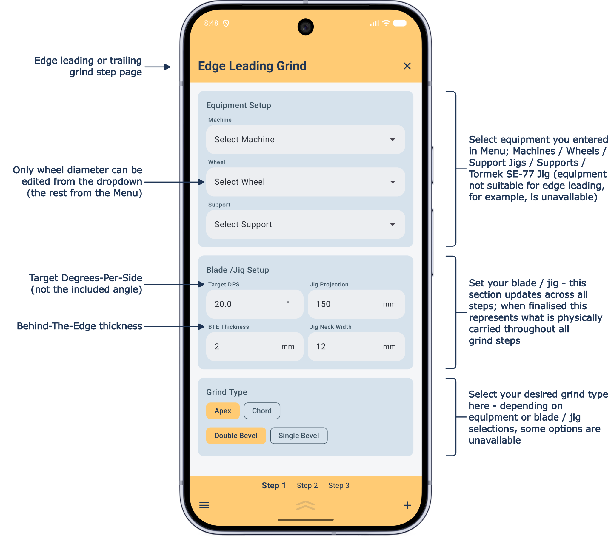
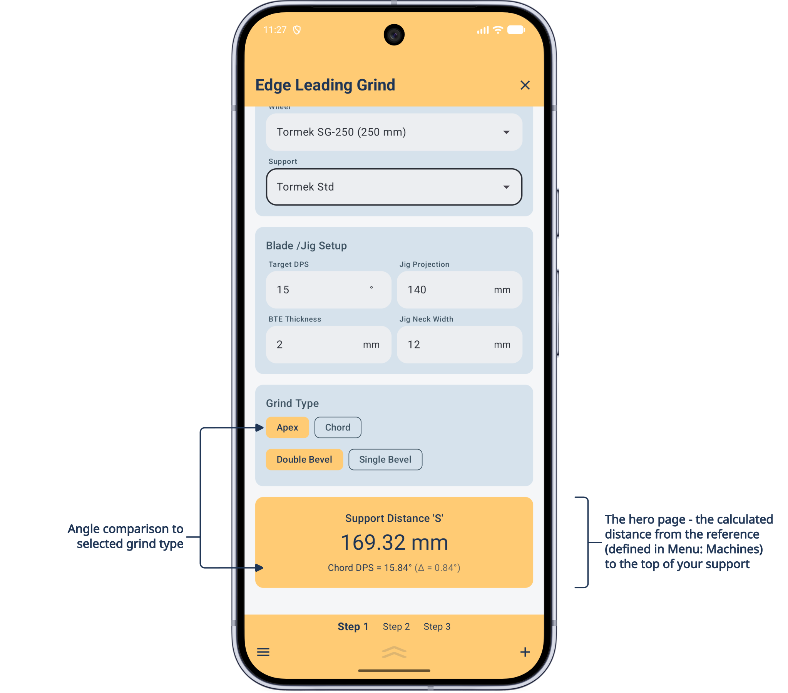
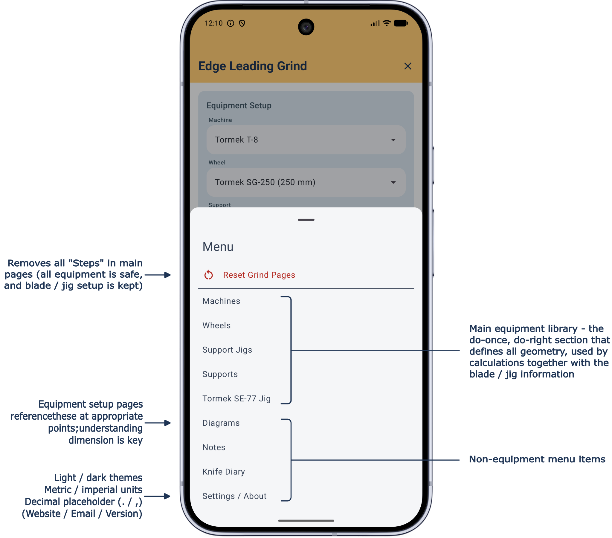
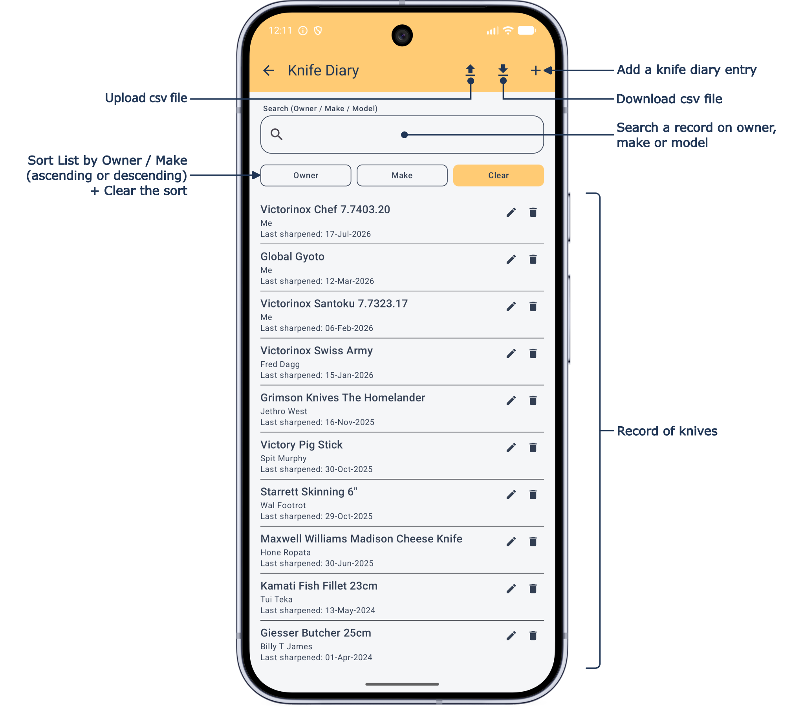
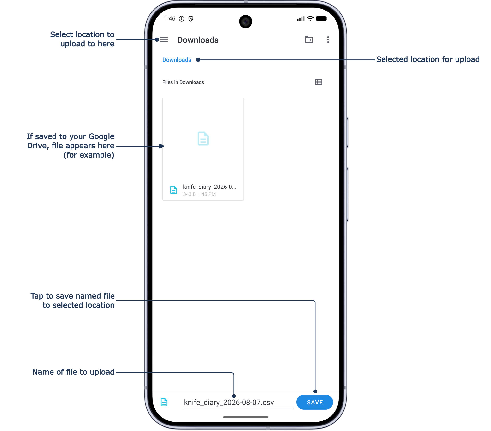
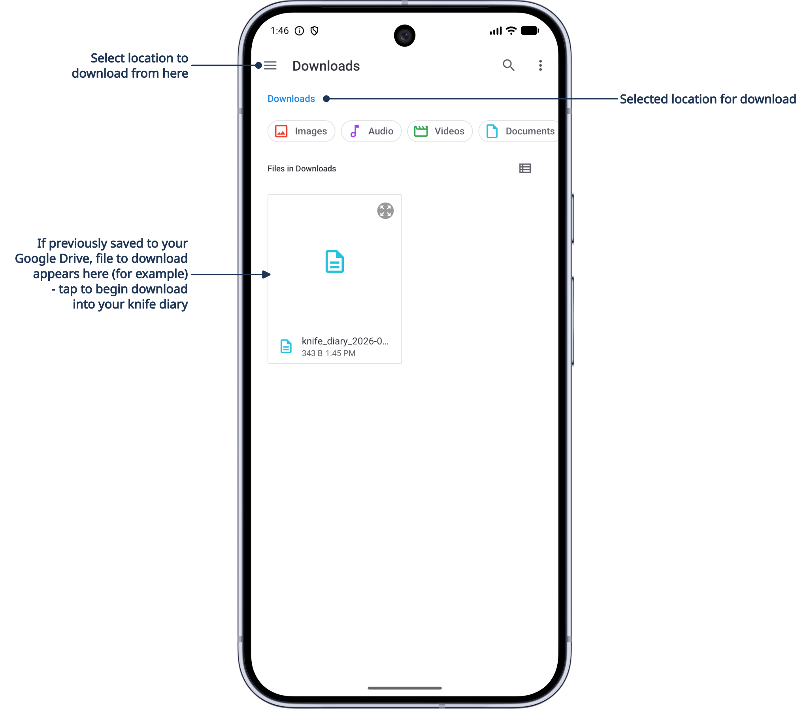
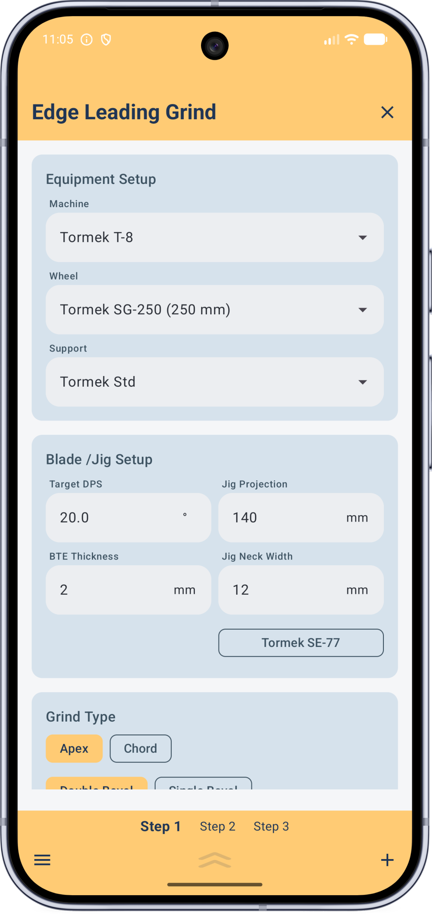

Guide
What JigSteps is, how to find your way around, and how to use it day to day.
Getting started
JigSteps isn't locked to one brand of wheel-type grinder. It's built around the Tormek T-8, but flat-type grinders are included too — if your grinder shares similar geometry to what's shown in the diagrams, set it up once and use whatever you prefer.
You can define up to five grind steps for one grinding job — coarse / fine / polishing / leather honing / felt wheel deburring (etc) — whatever you want to do, whatever the protocol you need! Your blade / jig setup stays locked across all of them, so results stay consistent from one step to the next.
The rest of this page shows you around the app and walks through a grind step in the order you'll actually use it. When you're ready to set up your own equipment, head to the Equipment page — it's a do-right, do-once exercise.
Using JigSteps day to day
Grind steps
Each main page represents a single grind operation, as part of a full sequential grinding / refinement process (up to 5 steps can be created). So we call each page a grind step, naturally. A grind step can be either edge-leading or edge-trailing, and is selected when each step is created.
Every grind step page has four sections. Three need your input — Equipment Setup, Blade / Jig Setup, and Grind Type — and are shown just below; the fourth, Result, is calculated automatically and is shown further down the page.
1 Equipment Setup: choose from your library — any combination is fine, though not every combination is valid for every step (a flat / belt grinder machine, for instance, can only be selected for an edge-trailing step).
2 Blade / Jig Setup: Stays physically unchanged across every grind step, right until the job's done (see also First grind check below).
3 Grind Type: Select either apex or chord angle, and double or single bevel.


4 Result: That last bit of the page is the entire point of the app — see a few sections below for what it's showing you.
Blade / Jig Setup
These fields define your physical blade / jig setup, and stay synchronised across every grind step — set them and they carry through until the job's done.
Target DPS (Degrees-Per-Side) is the angle on one side only — not the total included angle. Jig Projection is measured from the blade edge to the part of the jig that sits behind the support bar; the Tormek SE-77 is the one exception, measured to the front of the jig instead, because of its shape (see its diagram on the Equipment page). BTE Thickness (Behind-The-Edge) is the thickness behind the bevel itself, at the shoulder. Jig Neck Width is the width — or diameter — of the jig where it contacts the support bar, assumed symmetrical either side of the blade centreline; selecting the Tormek SE-77 makes this field unavailable, since its own geometry is used instead.
Grind Type
Choose Apex or Chord, combined with Double Bevel or Single Bevel. Chord is unavailable on flat-type grinders, since apex and chord angles are identical without wheel curvature to correct for. Double Bevel is unavailable if you've selected the Tormek SE-77, as this jig is built for single-bevel work only.
Apex is the true angle at the very edge of the blade. Chord is the angle across the flat line where the bevel first touches the wheel and where it leaves — and is always slightly larger than apex. The app shows you both, plus the difference between them — handy if you want to grind a chord angle as a guide for a hand-applied apex micro-bevel afterwards, useful on thicker blades like chisels.
Result
This is the entire point of the app. The Support Distance 'S' is the calculated distance to be measured from your equipment's reference point to the outermost part of your support. That reference point is, in almost all cases, the top of your support's adjusting nut — 'S' already accounts for it, and all other geometry used to get there. Please study the diagrams to fully understand measurement and reference points.
Below the support distance result is additional angle information that compares to the selected grind type (apex or chord), including the difference (Δ) between them.
To help with your setup, on occasions the support distance area has a message for your attention. These messages can be instead of, or with, the calculated distance:
Equipment Selection Incomplete — you've missed equipment in the Equipment Setup (also on starting a new grind step).
TOO HIGH FOR SUPPORT or TOO LOW FOR SUPPORT — your setup results in a support that is physically too high or too low to work (flat-type grinder setups don't use this check though). Some of the values in a support setup are used for this check — read more in the Equipment page. If a Tormek Std support won't work but a longer Tormek Ext would, and you have this, you'll get a gentler "Tormek Ext Support is Required" nudge instead. Fix any warning by adjusting your Support, Support Jig Projection, or Jig Projection.
Setup Not Achieveable — the setup creates invalid geometry that cannot be solved.
Calculate — this may occasionally appear and if so, just tap to continue.
First grind check
Worth re-checking after your first grind step: When a burr is developed, and especially after re-profiling a secondary bevel or re-shaping an edge, the angle you actually produce can drift from your target. Check and adjust (if necessary) the Jig Projection for that step to bring it back — this will produce a slightly lower Support Distance 'S' —so plan on a final light pass at the new setting to finish the step properly. The new Jig Projection will carry for all remaining refinement steps.
Menu page

Equipment
The setup for all equipment—machines, wheels, support jigs, supports, and the Tormek SE-77 jig—is explained in detail on the Equipment page.
Diagrams
Every diagram already appears in context on the Equipment page, right alongside the fields it explains. If you just want the full set at a glance while you're mid-measurement, open Menu → Diagrams in the app itself.
Notes
A condensed version of this Guide and the Equipment page are provided in the JigSteps app. These web pages are companions to the app.
Knife Diary
Track every knife you sharpen in one place — owner, make and model, blade material and Rockwell hardness, date last sharpened, BESS scores before and after, target DPS and jig projection, blade thickness, grind steps involved, and your own notes.
Search by owner, make, or model at any time. Either by itself or together with search, sort by Owner or Make, both ascending or descending order.

Rockwell HRC, BESS numbers, Grind Angle, Jig Projection and BTE thickness use numerical entries. Date Last Sharpened format is dd-mmm-yyy, for example, 21-Jan-2026. All other fields are free-form text, so you're not constrained to a particular format.


Export your whole diary to CSV (opens in Excel or similar software) whenever and to wherever you like, using your device's own file picker — no special permissions needed. Import works the same way in reverse; entries are added alongside what's already there, never overwriting or removing existing records.
You could, for example, export your records, open in Excel, and add other records to your JigSteps app if you wish; simply add rows but keep the headings untouched (and be sure to delete existing records from the CSV file - if you don't you will double-up existing entries).


Settings / About
You have some choice to suit your preferences, and in-app information already provided by this web site is shown here too.

Appearance - System / Light / Dark.
Units - Metric (mm) or Imperial (inch) - defaults are set in metric so imperial is a converted display and may seem odd (until you change them)!
Decimal separator - period (.) or comma (,).
